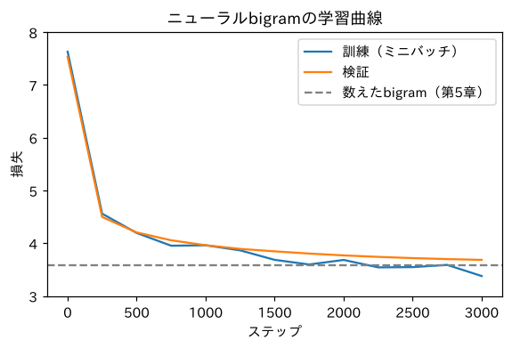

第2部 ゼロから作る · 第8章
数えずに学ぶ：ニューラルbigram
確率の表を勾配降下法で「学習」させたら、数えた答えに近づいていった
おすすめは「ページを読みながら、コードを自分のノートブックに1セルずつ貼って実行」。完成ノートは困ったときの答え合わせ用です。
つくるもの
bigramの確率表を、数えるのではなく勾配降下法で学習するニューラルネットワーク（最小のニューラル言語モデル）
身につく数学・理論
- ロジットの表＝パラメータ
- 交差エントロピー損失（
F.cross_entropy） - ミニバッチ確率的勾配降下法（SGD）
- 最尤推定：損失最小化は「数える」と同じ答えになる
- 学習曲線の読み方
- 正則化とスムージングの関係
新しく使うPython・PyTorch
torch.randintでランダムに選ぶtorch.Generatorで乱数を固定F.cross_entropyW.grad = None
この章でつくるもの
第6章の「確率の表」と、第7章の「坂を下る方法」を合体させます。表の中身をでたらめ（全部0）から始めて、損失が小さくなる方向に少しずつ調整していくと……表の中身が、数えた答えにだんだん近づいていくはずです。これが、世界で一番小さな ニューラル言語モデル です。
これまでの復習とつながり：第3章・第5章・第6章・第7章とのつながり
これまで別々に学んできた4つの道具が、この章でついに1本の線につながります！

ミナト
数えれば一瞬で答えが出るのに、わざわざ学習させる意味あるんですか？

ボンゴ先生
鋭い。この章のモデルだけ見れば、意味はない。でも、「数える」は直前の文字が1つのときしか使えない。直前10文字を見たいときは数えられない（第4章の組み合わせ爆発）。でも「学習」なら、どんなに複雑なモデルにも使える。今日は、答えが分かっている問題で、学習という方法が本当に正しい答えにたどり着くかを確かめるんだ。答え合わせ付きの練習問題だね。
準備
準備セルに、今回は文字⇔番号の変換と、データのテンソル化も入れておきます。
import re, math, urllib.request
import torch
import torch.nn.functional as F
def load_soseki(file_id="773_ruby_5968"):
url = ("https://raw.githubusercontent.com/aozorahack/aozorabunko_text/0984f7dc18a2270bdfd2ff99bf14fd1b3ebb4f65/"
f"cards/000148/files/{file_id}/{file_id}.txt")
try:
with urllib.request.urlopen(url, timeout=30) as res:
text = res.read().decode("cp932")
except Exception as e:
raise RuntimeError(f"青空文庫の取得に失敗しました（時間をおいて再実行するか付録Eを参照）: {e}") from e
text = text.split("-------------------------------------------------------")[2]
text = text.split("底本：")[0]
text = re.sub(r"《.*?》", "", text)
text = re.sub(r"※?［＃.*?］", "", text)
text = text.replace("｜", "").replace("\r\n", "\n")
text = re.sub(r"\n{3,}", "\n\n", text)
return text.strip()
text = load_soseki()
chars = sorted(set(text))
V = len(chars)
stoi = {ch: i for i, ch in enumerate(chars)}
itos = {i: ch for ch, i in stoi.items()}
data = torch.tensor([stoi[c] for c in text])
n = int(len(data) * 0.9)
train_data, val_data = data[:n], data[n:]
print(V, train_data.shape, val_data.shape)2061 torch.Size([146220]) torch.Size([16247])今度は文章全体を数字のテンソルにしてしまいました。ここからは、文字ではなく番号で考えます。
xs, ys = train_data[:-1], train_data[1:] # 入力（今の文字）と正解（次の文字）
vxs, vys = val_data[:-1], val_data[1:]
print("入力：", xs[:8].tolist())
print("正解：", ys[:8].tolist())
print("文字で見ると：", [itos[i] for i in xs[:8].tolist()], "→", [itos[i] for i in ys[:8].tolist()])入力： [138, 3, 263, 1272, 45, 1375, 0, 0]
正解： [3, 263, 1272, 45, 1375, 0, 0, 132]
文字で見ると： ['上', '\u3000', '先', '生', 'と', '私', '\n', '\n'] → ['\u3000', '先', '生', 'と', '私', '\n', '\n', '一']入力と正解が、1文字ずつずれて並んでいます。「上 の次は （全角空白）」「先 の次は 生」……。これが、言語モデルの 教師データ です。問題（入力）と答え（正解）の組が14万個以上あります。
理論の小部屋：ラベルシフトと「教師強制（teacher forcing）」
xs = train_data[:-1]、ys = train_data[1:] のように、同じ文章を1文字だけ右にずらして入力と正解の組を作る手法を ラベルシフト と呼びます。そして学習時に、モデル自身の前の予測結果ではなく毎回「本当の正解の文字」を入力として与えて次を予測させる方法を 教師強制（teacher forcing）と呼びます。
- なぜ教師強制を使うのか？：学習初期のモデルはでたらめな文字ばかり出すため、自分の出力を次の入力にすると連鎖的に崩壊して学習が進みません。正解を毎回教えながら練習させることで、全位置の損失を安定かつ並列に計算できます。
- 生成（推論）との違い：第3章の自己回帰生成では正解が存在しないため、モデル自身の予測を次の入力へ戻します。この「学習時は正解入力、本番は自己出力」というズレは研究でも重要なテーマです（第11章の複数位置同時学習でもそのまま使います）。
※ なお、ここでは第5章と同様に簡潔さのため全テキスト text から語彙 chars を作っていますが、実務・研究では検証データからの情報漏れを防ぐため訓練データのみで語彙を構築します。
モデル：中身がでたらめな表
第6章の確率の表 P の代わりに、点数（ロジット）の表 W を用意します。中身は最初、全部0です。
W = torch.zeros((V, V), requires_grad=True)
print(W.shape, "パラメータの数：", W.numel())torch.Size([2061, 2061]) パラメータの数： 4247721使い方は第6章と同じです。今の文字の番号で行を取り出せば、それが「次の文字の点数」。第3章のsoftmaxで確率にします。
x = torch.tensor([stoi["先"]])
logits = W[x] # 「先」の行＝次の文字の点数（ロジット）
probs = F.softmax(logits, dim=1)
print(logits.shape, probs.shape)
print("「生」の確率：", probs[0, stoi["生"]].item(), " ＝ 1/V：", 1 / V)torch.Size([1, 2061]) torch.Size([1, 2061])
「生」の確率： 0.0004852013662457466 ＝ 1/V： 0.00048520135856380397点数が全部0なので、softmaxするとどの文字も同じ確率 になります。何も知らない、まっさらな状態です。
基礎の補足なぜ W[x] は「最小のニューラルネットワーク」と言えるのか？
第6章で見たとおり、文字番号 x を one-hot ベクトル（x 番目だけ 1、残り2060個は 0）にして行列 W を右から掛けると、ちょうど W の x 行目がそのまま取り出されます。
# 数学的にはこの2つは完全に同じ計算！
# 方法A（第6章の行列積）：巨大な one-hot 行列 [B, 2061] を作って W と掛ける（0の掛け算が多くて遅い）
# logits = F.one_hot(x, num_classes=V).float() @ W
# 方法B（この章の書き方）：直接 x 行目を取り出すだけ（同じ結果で圧倒的に速く、自動微分もそのまま動く）
# logits = W[x]そして初期値を全部 0 にすると、すべての文字で になるため、softmax 後の確率はちょうど の完全な一様分布になります。
損失：交差エントロピー
第5章の損失（正解の確率の の平均）を、テンソルで計算してみます。
def loss_by_hand(W, x, y):
logits = W[x]
probs = F.softmax(logits, dim=1)
p_correct = probs[torch.arange(len(y)), y] # 各行の「正解の文字」の確率
return -p_correct.log().mean()
print("手作りの損失：", loss_by_hand(W, xs[:1000], ys[:1000]).item())
print("F.cross_entropy：", F.cross_entropy(W[xs[:1000]], ys[:1000]).item())
print("log V：", math.log(V))手作りの損失： 7.630945205688477
F.cross_entropy： 7.630943775177002
log V： 7.630946580890459理論の小部屋：交差エントロピー：F.cross_entropy が1つに融合している3ステップ
F.cross_entropy(logits, targets) は、次の 3つの計算 を内部でひとまとめ（かつオーバーフロー・アンダーフローしない数値的に安全な方法）で実行してくれます。
- 安全な softmax：生の点数
logits（形[B, V]）の各行から最大値を引いて確率分布 に変換（第3章） - 正解の驚き ：各サンプル について、正解文字
targets[i]の確率だけを取り出して をとる（第5章） - バッチ平均： 個のサンプルの平均をとって1つのスカラー（損失）を返す
まっさらなモデルの損失は 。第5章の記録表の「でたらめ」と同じです。ここから、どこまで下げられるでしょう？
つまずき注意：絶対に注意！ F.cross_entropy には「softmax前の生のロジット」を渡す
初心者が最もやりがちなバグが、すでに F.softmax を掛けた確率 probs を F.cross_entropy に渡してしまうことです。F.cross_entropy の内部でもう一度 softmax が掛かってしまい（二重softmax）、エラーも出ないまま学習が壊れます！
import math
# 正解がクラス0で、モデルがロジット [5.0, 0.0, 0.0]（ほぼ確信！）を出した例：
# ① 正しい使い方（生のロジットを渡す）：
# softmax([5, 0, 0]) ≒ [0.987, 0.007, 0.007] → 損失 = -log(0.987) ≒ 0.013（ほぼ完璧！）
# ② 誤った使い方（確率 [0.987, 0.007, 0.007] をさらに F.cross_entropy に渡す）：
# もう一度 softmax されて [0.570, 0.215, 0.215] → 損失 = -log(0.570) ≒ 0.562（大外れ扱い！）鉄則：モデルの最後は必ず生のロジットのまま返し、F.cross_entropy(logits, y) に直接渡しましょう。確率が欲しいとき（生成や上位表示）だけ F.softmax を掛けます。
Pythonの道具箱：2つのリストで同時に選ぶ
probs[torch.arange(len(y)), y] は、「0行目の y[0] 列、1行目の y[1] 列、2行目の y[2] 列……」を一度に取り出す書き方です（第6章の P[xs, ys] と同じ）。torch.arange(n) は 0, 1, 2, …, n-1 を作ります。
学習：ミニバッチで坂を下る
いよいよ学習です。14万個の問題を毎回全部解くと時間がかかるので、毎回ランダムに1024問だけ選んで損失を計算し、坂を下ります。
g = torch.Generator().manual_seed(0)
W = torch.zeros((V, V), requires_grad=True)
lr = 50
history = []
for step in range(3001):
ix = torch.randint(0, len(xs), (1024,), generator=g) # ランダムに1024問選ぶ（(1024,) は形の指定。要素1つでもカンマが必要）
loss = F.cross_entropy(W[xs[ix]], ys[ix]) # ① 損失
W.grad = None # （勾配をリセット）
loss.backward() # ② 勾配
with torch.no_grad():
W -= lr * W.grad # ③ 更新
if step % 250 == 0:
with torch.no_grad():
val_loss = F.cross_entropy(W[vxs], vys).item()
history.append((step, loss.item(), val_loss))
if step % 500 == 0:
print(f"ステップ {step:4d}：訓練 {loss.item():.3f} 検証 {val_loss:.3f}")ステップ 0：訓練 7.631 検証 7.531
ステップ 500：訓練 4.196 検証 4.206
ステップ 1000：訓練 3.963 検証 3.963
ステップ 1500：訓練 3.686 検証 3.847
ステップ 2000：訓練 3.685 検証 3.771
ステップ 2500：訓練 3.548 検証 3.719
ステップ 3000：訓練 3.379 検証 3.685CPUだと1〜2分かかります。損失がどんどん下がっていきます！ 7.63（まっさら）から、3.7あたりまで来ました。
ステップ0の検証損失だけ7.531と、 より少し小さいのは、検証損失を1回更新した後に測っているからです（コードでは、③の更新の後に検証しています）。訓練損失の7.631は更新の前に測っているので、ぴったり です。
Pythonの道具箱：W.grad = None
第7章では .grad.zero_() で勾配を0にしました。W.grad = None は「勾配を捨てる」で、効果は同じです（次の backward() で新しく作られます）。メモリの節約になるので、こちらがよく使われます。
基礎の補足ニューラル学習ループ5ステップの解剖とミニバッチの読み方
この先の章（MLP・GPT・ファインチューニング）でも、学習ループの心臓部は常に次の 5ステップ です：
| 順番 | ステップ名 | この章のコード | 意味 |
|---|---|---|---|
| ① | 順伝播（forward） | logits = W[xs[ix]] |
ミニバッチ1024問の生の点数（形 [1024, 2061]）を出す |
| ② | 損失（loss） | loss = F.cross_entropy(logits, ys[ix]) |
正解とのずれを1つの数にまとめる |
| ③ | 勾配リセット（zero_grad） | W.grad = None |
前回の勾配を消す（backward() の直前に置くのが安全！） |
| ④ | 逆伝播（backward） | loss.backward() |
計算グラフを逆走し、全マスの勾配 W.grad を一括計算 |
| ⑤ | 更新（step） | with torch.no_grad(): W -= lr * W.grad |
記録を切って勾配の逆向きへ一歩下る |
また ix = torch.randint(0, len(xs), (1024,), generator=g) のポイントも押さえておきましょう：
0以上len(xs)未満のランダムな行番号をbatch_size = 1024個引きます。- Pythonでは要素1個のタプルには末尾カンマが必要なので、
(1024)ではなく(1024,)と書きます（(1024)だとただの整数になりエラー）。 - 1エポック（訓練データ1周）＝
len(xs) / batch_sizeステップなので、総エポック数は(ステップ数 × batch_size) ÷ len(xs)で計算できます。
理論の小部屋：ミニバッチ確率的勾配降下法（SGD）
全部のデータで損失を計算する代わりに、ランダムに選んだ一部（ミニバッチ、今回は1024個）で計算して坂を下る方法を、確率的勾配降下法（stochastic gradient descent、SGD）と言います。
- 一部だけなので、損失や勾配は少しぶれる（上の「訓練」の値がガタガタなのはこのため）
- でも計算が軽いので、同じ時間で何倍も多く坂を下れる
- ぶれは、平均すると正しい方向を向いている
全問題を解いてから先生に採点してもらうより、10問ずつ解いてはその場で答え合わせをするほうが、早く上達しますよね。データ全体を1周することを 1エポック（epoch）と呼びます。今回は1024問 × 3000回 ≒ 300万問なので、約21エポックです。
学習率が50と大きいのは、この表の1マスあたりの勾配がとても小さいからです。モデルごとに、ちょうどいい学習率は違います。
学習曲線を描く
損失の変化をグラフにしたものを 学習曲線 と呼びます。学習がうまくいっているかを診断する、健康診断書のようなものです。
!pip install -q matplotlib-fontjaimport matplotlib.pyplot as plt
import matplotlib_fontja
steps = [h[0] for h in history]
plt.figure(figsize=(6, 3.5))
plt.plot(steps, [h[1] for h in history], label="訓練（ミニバッチ）")
plt.plot(steps, [h[2] for h in history], label="検証")
plt.axhline(3.581, color="gray", linestyle="--", label="数えたbigram（第5章）")
plt.xlabel("ステップ")
plt.ylabel("損失")
plt.ylim(3, 8)
plt.legend()
plt.title("ニューラルbigramの学習曲線")
plt.show()
検証損失は、灰色の点線（第5章で数えたbigramの3.581）に向かって、ゆっくり近づいています。
学習した表の中身を見る
学習した W が、本当に「数えた答え」に似ているか確かめましょう。
with torch.no_grad():
p = F.softmax(W[stoi["先"]], dim=0)
top = torch.topk(p, 5)
print("学習したモデル：「先」の次は…")
for prob_, i in zip(top.values, top.indices):
print(f" {itos[i.item()]!r} {prob_.item():.3f}")学習したモデル：「先」の次は…
'生' 0.895
'へ' 0.026
'刻' 0.020
'で' 0.012
'に' 0.004数えたときは「生」が0.88でした（第4章）。学習では0.895。誰にも「数えろ」とは教えていないのに、損失を小さくしようと坂を下っただけで、数えた答えにたどり着いたのです。
理論の小部屋：最尤推定：学習と数えるは同じ答えになる
これは偶然ではありません。「訓練データの交差エントロピー（驚きの平均）を最小にするような確率」は、数学的に 数えた割合（頻度） とぴったり一致することが証明できます。この「データが最もありそうになる（尤もらしい）パラメータを選ぶ」という考え方を 最尤推定（さいゆうすいてい、maximum likelihood estimation）と言います。
なぜ一致するのかというと、交差エントロピー損失の傾き（勾配）を計算すると、ちょうど「モデルの予測確率 − 実際の出現割合」という形になるからです。予測確率が実際の頻度とぴったり一致した瞬間に、傾きがゼロになって坂の下りが止まります。だから勾配降下法を繰り返すだけで、自然と数えた割合と同じ確率に落ち着くのです。
つまり、
- 数えるbigram ＝ 最尤推定の答えを直接計算したもの
- ニューラルbigram ＝ 同じ答えを坂を下って探したもの
直接計算できるのは、bigramのような単純なモデルだけです。ニューラルネットワークを使えば、直接計算できないような複雑なモデルでも、同じ「坂を下る」方法で答えを探せます。それが、この先のすべての章でやることです。
理論の小部屋：スムージングと正則化
数えるbigramでは、見たことのないペアに確率0をつけないよう、スムージングで回数に少し下駄をはかせました。ニューラルbigramでは、W が全部0（＝全文字が等確率）から出発し、学習ステップ数が有限なので、極端な確率0にはなりません。
さらに積極的に「極端な値になるのを防ぐ」方法として、損失に「W の値が大きいほど罰を与える」項を足すやり方があります。これを 正則化（せいそくか、regularization）と言い、スムージングと同じ役割を果たします（第10章で weight_decay として登場します）。
生成してみる
g = torch.Generator().manual_seed(1)
ix = stoi["私"]
out = ["私"]
with torch.no_grad():
for _ in range(60):
p = F.softmax(W[ix], dim=0)
ix = torch.multinomial(p, 1, generator=g).item()
out.append(itos[ix])
print("".join(out))私はかえってに、それは、ないの奥さんにした。先生の頭に私の…数えたbigramと同じくらいの「なんとなく漱石」です。それもそのはず、中身がほぼ同じ表なのですから。
記録表
| モデル | 章 | 検証データの損失 |
|---|---|---|
| でたらめ（一様分布） | 5 | 7.631 |
| bigram（数える、k=0.01） | 5 | 3.581 |
| ニューラルbigram（SGD 3000ステップ） | 8 | 3.685 |
ニューラル版はまだ数えた版に追いついていません。ステップ数を増やせば近づきますが、同じ「直前1文字だけ」の情報しか使っていない以上、数えた版を大きく超えることはできません。超えるには、モデルにもっと前の文字を見せる必要があります。次の章でやりましょう。
やってみよう：学習率を変えてみよう
lr = 50 を lr = 5、lr = 200、lr = 1000 に変えて、学習曲線を描き直してみましょう。どうなるか予想してから！ 教科書の検証で実際に試した結果（3000ステップ後の検証損失）はこうでした。
- 5：4.41。ゆっくりすぎて、3000ステップでは全然下りきらない
- 200：3.58。意外にも、50より速く、なめらかに下がる。このモデルは単純なので、「ちょうどいい」範囲が思ったより広いのです。そして、数えた版（3.581）とほぼ同じところで止まります。同じ「直前1文字」の情報しか使っていない以上、そこが限界だからです
- 1000：5.57。さすがに大きすぎて、損失が上がったり下がったり暴れ、ちっとも下がらない
「ちょうどいい学習率」はやってみないと分からず、モデルによって違う。だから研究者は、いくつか試して学習曲線を見比べるのです。
つまずき注意：よくあるつまずき
- 損失が
nanになった：学習率が大きすぎて発散しています。学習率を小さくしましょう。 RuntimeError: element 0 of tensors does not require grad：Wを作るときにrequires_grad=Trueを付け忘れています。RuntimeError: a leaf Variable that requires grad is being used in an in-place operation.：更新の行（W -= lr * W.grad）がwith torch.no_grad():の中に入っていません（字下げを確認）。- 損失がほとんど下がらない：学習率が小さすぎるか、勾配のリセット（
W.grad = None）の位置がずれています。上のコードと1行ずつ見比べましょう。 - とても遅い：検証損失の計算（
W[vxs]）は重いので、毎ステップではなく250ステップごとにしています。Colabのランタイムを「T4 GPU」にして、Wを作る行をW = torch.zeros((V, V), requires_grad=True, device="cuda")に変え、xs, ys, vxs, vysもそれぞれxs = xs.to("cuda")のようにGPUへ送ると速くなります。Wは、作った後から.to("cuda")すると「学習するパラメータ」ではなくなり、W.gradがNoneのままになるので、作るときにdevice=で指定するのがコツです。GPUにした場合は、「生成してみる」のセルのp = F.softmax(W[ix], dim=0)をp = F.softmax(W[ix], dim=0).cpu()に変えます（サイコロのgeneratorがCPU用なので、確率もCPUに戻す必要があります）。くわしくは第13章で本格的にやります。
できたらチェック
まとめ
- ニューラルbigram ＝ ロジットの表
Wを、交差エントロピーが小さくなるように勾配降下法で調整したもの - ミニバッチSGD：ランダムな一部で損失と勾配を計算し、少しずつ下る
- 損失最小化（最尤推定）の答えは、数えた頻度と一致する。学習は「数える」の一般化
- 学習曲線で、訓練と検証の損失を見比べるのが診断の基本
ボンゴ先生
いよいよ次は、本物のニューラルネットワークだ。直前の何文字もを見て、次の文字を予想する。そのために、文字を「数の組」で表す 埋め込み という魔法を使う。「先生」と「教授」が似ていることを、モデルが自分で見つけ出すようになる。
説明の読了チェックです（ブラウザ内にのみ保存）。「理解・定着」は途中の確認問題・自力実装・間隔復習の結果と合わせて記録されます。